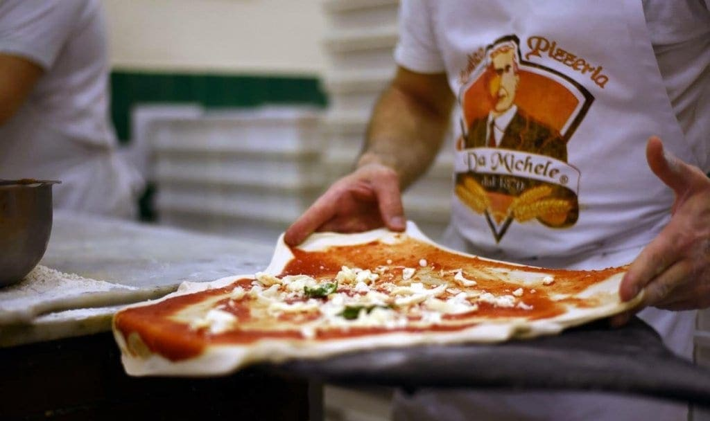

Cucina napoletana
La cucina napoletana è una dichiarazione d'amore per la terra e per il mare. Protagonista assoluta è la Pizza, riconosciuta dall'UNESCO come patrimonio dell'umanità, ma il viaggio gastronomico va ben oltre.

Scopri di più
Antica Pizzeria da Michele
La storica Antica Pizzeria da Michele è uno dei templi della pizza napoletana.
Esempio perfetto di una tradizione gastronomica semplice ma famosa in tutto il mondo.
Scopri di più
Il caffè
Un Rito Sociale: A Napoli il caffè non è solo una bevanda, è una filosofia di vita.